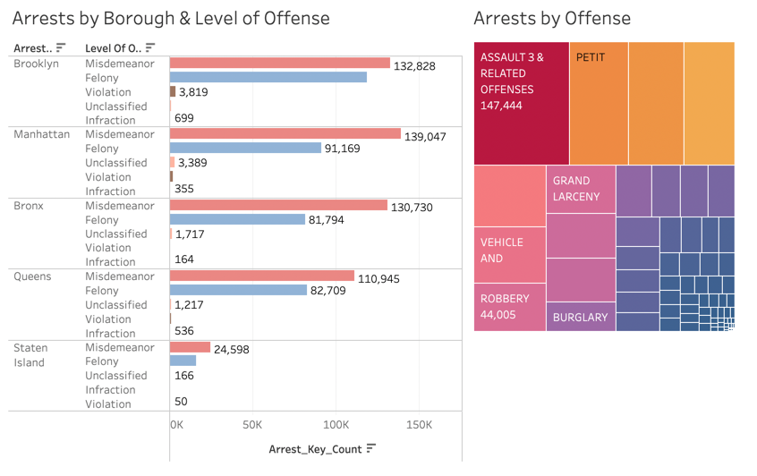
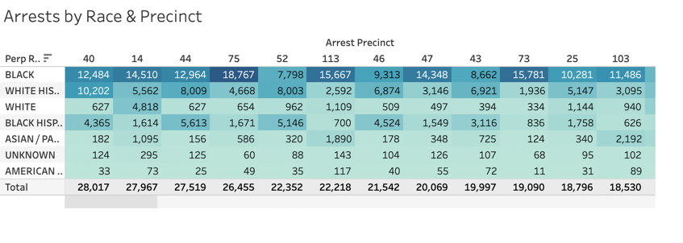

This project aims to shed light on a a complex data related to arrests and to communicate the findings with a broad audience. We begin this process with some basic data preprocessing, then create interactive visualizations and embed them within a Tableau story. We illustrate the insights using NYPD arrests data from years 2018-2022 to uncover interesting patterns, both qualitative and quantitative, and trends in different types of crimes and how they varied across different locations in the city.
The initial dataset, found on NYC Open Data website, included list of every arrest dating back to 2006 till previous calendar year. This data is manually extracted every quarter and reviewed by the Office of Management Analysis and Planning before being posted on the NYPD website. Each record represents an arrest effected in NYC by the NYPD and includes information about the type of crime, the location and time of enforcement. In addition, information related to suspect demographics is also included.
The dataset for the desired years was extracted in raw format and stored in BigQuery tables. The initial preprocessing tasks like removing nulls, transforming categorical columns and data cleaning were performed using Python(Pandas library). The processed data is again stored in a different BigQuery table so as to connect to Tableau Desktop using the Google BigQuery connection available in Tableau. The dashboards are facilitated with different filter actions to easily understand the patterns and information related to different types of offenses.
In order to analyze the NYPD arrest data and generate insights out of it, a systematic approach has been followed and demonstrated using the following visualizations:
Line chart showing the trends in total arrests
Bar chart and Heatmap visualisations
Highlight Table showing arrests by race & precinct